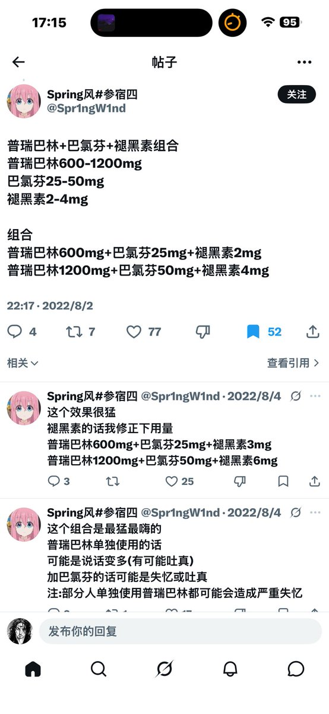

Jahseh
@godspeedyou50
你应该转这条我蹭流量的帖子🧘 然后没嗑药的话加入我 顺便叫一声妈妈 是吧 @drug_artist2

Pharmakon
@Pharmakon14138
普瑞耐受前提下摄入2100mg八个半小时后二次给药测试
加量同剂量2100mg普瑞（药效残留混合联用后约等于1200mg）+70mg巴氯芬+7mg褪黑素
瑞思拜 春风 提前了几天 但我多次体验此联用这是最贴合此组合以及超量测试 最近有点癫痫和抽动 https://t.co/Fl4xjXJ7qn